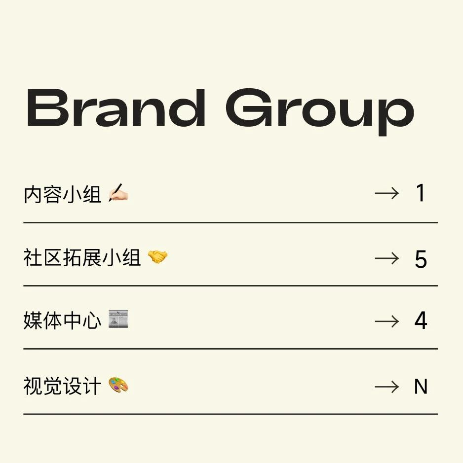

招募 | SeeDAO S5 品牌小组招募
作者: SeeDAO
SeeDAO S5 市政厅品牌小组招募：内容伙伴、外联伙伴、媒体中心、视觉设计师，欢迎大家投递 ~

1. 参与内容规划，如让Web3重返生活、社区共学等3. 与有关项目&DAO工具对接（项目如Wiki, 城邦作品等；DAO工具AAAny, Cascad3 等）SeeDAO L1级贡献者，了解 SeeDAO 价值观1. SeeDAO 12000 token/人/月2. 成员根据成效出具SeeDAO内容策展链上实习证明📮投递方式：makiyo2008@hotmail.com（请附上联系方式）社区拓展小组 | 外联伙伴
1. 在社区拓展负责人的统筹下处理SeeDAO外联事物4. 加强社区内部公会或孵化项目与外部的连接与合作，主动寻找优质合作伙伴及合作机会5. 就 SeeDAO 各项活动寻找合适的合作伙伴7. 社区战略和品牌小组战略所需的其他外联事宜。具体形式包括但不限于：互动对接、会议主持、商务谈判、活动策划、资源拓展、品牌公关等。外联成员根据实际需要和个人情况，参与上述部分事务。1. L1 以上SeeDAO成员。（请提供钱包地址）2. 出色的口头和书面表达能力，有相关经验者优先。1. SeeDAO Token 基础7000/月/人，3个月：21000（基础积分也需要实际POW, 可视为每月最低要求）2. POW : 以 POW 为原则进行积分分配，多劳多得3. 如合作事项有盈利或结余，80% 按劳奖励给组织参与人员参考：每场外联活动积分预算约 2000~5000，根据参与情况分配，根据不同事情实际情况可调节预算范围；SeeDAO S5 赛季（2023年12月~ 2024年2月），后续可继续申请下届外联📮投递方式：cooperation@seedao.info（请附上联系方式）2. 根据媒体平台调性及相关数据，优化媒体运营方案3. 协助统筹 DAO 媒体资源和规划，进行对外媒体对接和对内发布需求的协调2. 参加过 SeeDAO 新手营或已成为 SeeDAO 成员3. 对 Web3/DAO 有基础知识储备，学习能力强，对新事物和新工具有极大的好奇心4. 加分：视频剪辑 / 公众号排版运营 / 设计经验1. 依据工作成果，每月发放6000-10000 SeeDAO Token (未来有机会兑换SeeDAO NFT, 享受更多权益）2. 与 SeeDAO 深度连接，深入了解 DAO 内各组织及公会，积累Web3人脉* 能够持续参与三个月的小伙伴优先，满足最低 PoW 要求可获得链上工作证明SBT及晋升通道📂 投递请附作品集及联系方式，作品若超20M请发网盘链接
1. 制定和实施小红书运营策略，提高SeeDAO品牌知名度和社交媒体影响力4. 分析小红书数据和用户反馈，制定数据驱动的增长策略和优化方案5. 与社区内项目及成员协作，协调小红书与其他媒体平台的整合1. 熟悉小红书运营流程和平台特点，对小红书内容创作有一定的了解，能够根据媒介目标进行精准的内容策划和推广2. 具备一定的设计排版能力，能够使用工具制作美观的图文并茂的小红书内容3. 良好的文字表达能力，能够撰写有吸引力的小红书文案以及进行文案的优化和编辑4. SeeDAO成员及有运营经验及成功案例者优先1. 依据工作成果，每月发放6000-12000 SeeDAO Token (未来有机会兑换SeeDAO NFT, 享受更多权益）2. 与 SeeDAO 深度连接，深入了解 DAO 内各组织及公会，积累Web3人脉* 能够持续参与三个月的小伙伴优先，满足最低PoW要求可获得链上工作证明SBT及晋升通道📂 投递请附作品集及联系方式，作品若超20M请发网盘链接
2. 将 SeeDAO 的重要会议和活动内容形成文字报道3. SeeDAO成员且曾参与 SeeDAO 活动及公会优先4. 加分：视频剪辑 / 公众号排版运营 / 设计经验依据工作成果，每月发放10000 - 15000 SeeDAO Token (未来有机会兑换SeeDAO NFT, 享受更多权益）📂 投递请附作品集及联系方式，作品若超20M请发网盘链接
品牌/视觉设计师 (远程兼职)1. 了解品牌和设计行业趋势，能够独立完成并提供品牌调研后的设计思考。2. 协助策划社交媒体内容创意、视觉排版设计，与SeeDAO市政厅合作推进项目进程。1. 关注国内外新媒体视觉趋势，具有品牌思维，关注品牌趋势变化。2. 有好奇心、有责任感、具备良好的视觉表达能力与原创性。3. 掌握Al，Figma，PS，AE等软件，C4D为加分项。7000-12000 token/月，链上工作证明SBT，未来有晋升通道和获得seed nft的机会。* 能够持续参与三个月的小伙伴优先，每个月有最低的PoW要求，给予创作空间，工作量合理，多劳者多得。📮投递方式：loveseedao@gmail.com📂 投递请附作品集及联系方式，作品若超20M请发网盘链接
内容来源 | 品牌小组
排版 | T1NG
审核 | T1NG